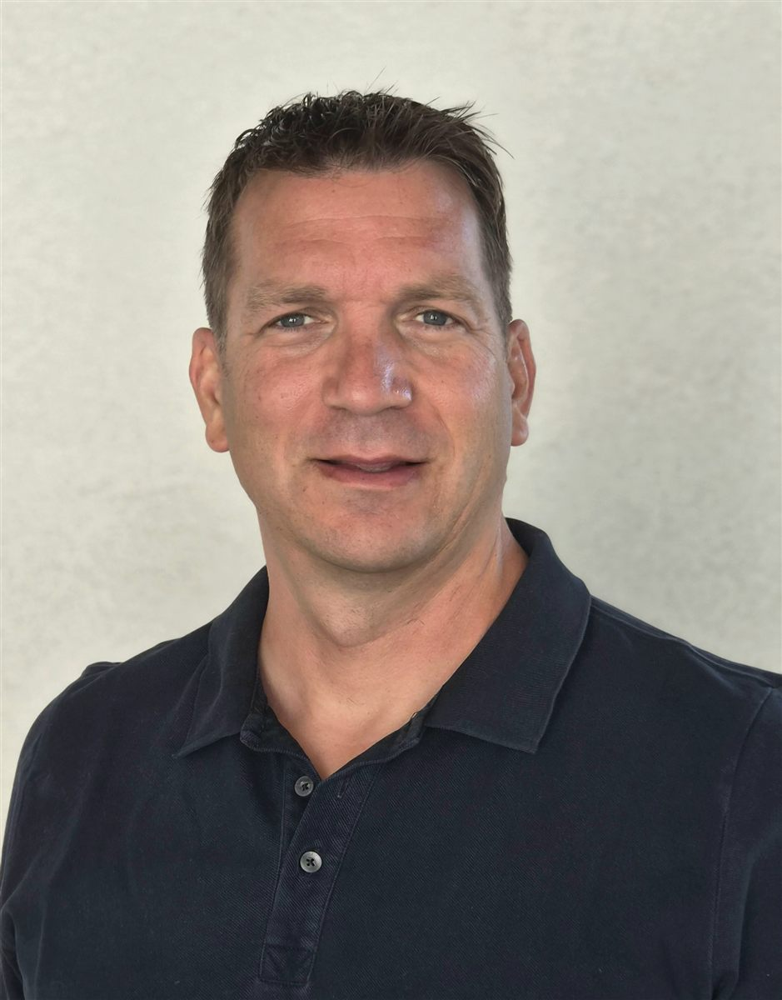

Bewegungsfreude zurückgewinnen – schonend und modern behandelt
Priv.-Doz. Dr. Stefan Hofstätter und sein Team bieten Ihnen in der Wallerer Str. 12 in Wels eine umfassende, moderne Betreuung bei Arthrose/Gelenksverschleiß, Sehnenerkrankungen und Wirbelsäulenbeschwerden – mit gezielter Ursachenforschung, bioregenerativen Therapien und dem Ziel, invasive Eingriffe so lange wie möglich zu vermeiden.

Priv. Doz.
Dr. Stefan Hofstätter
Ihr
Facharzt für
Orthopädie,
Sport &
Therapie
Spezialisiert auf
Schmerztherapie
Prophylaxe
Regeneration
Wir
Bringen
Bewegung
ins
Leben
Unsere Schwerpunkte: Schmerzfreiheit & Prophylaxe
In unserer Ordination verbinden wir präzise Diagnostik mit modernen, regenerativen Therapien. Unser Ziel: Schmerzen nachhaltig lindern und Ihre Gewebestrukturen langfristig schützen.
Akute & chronische Schmerztherapie
Gezielte Behandlungen bei Beschwerden von Gelenken, Wirbelsäule und Sehnen für eine schnelle Rückkehr in den schmerzfreien Alltag. Dazu zählen gezielte Infiltrationen an der schmerzenden Wirbelsäule und den Gelenken mit lokalem Schmerzmittel und Kortison bei akuten Schmerzzuständen. Neben Kortison kommen jedoch auch bioregenerative Therapien wie Plasmatherapie (ACP), Hyaluronsäuretherapie oder mesotherapeutische Anwendungen zum Einsatz.
Bioregenerative Therapie & Prophylaxe
Nachhaltiger Schutz von Knorpel, Knochen und Sehnen zur Vorbeugung von Verschleiß (Arthrose) und Überlastungsschäden.
- Stoßwellentherapie (ESWT): Regt die Zellregeneration an und heilt chronische Sehnenreizungen (z. B. Fersensporn, Achillodynie).
- Hyaluronsäuretherapie: Schmiert das Gelenk, schützt den Knorpel und verbessert die Beweglichkeit.
- ACP-/Eigenbluttherapie (PRP): Verwendet körpereigene Wachstumsfaktoren zur biologischen Heilung von Gewebeschäden.
Physikalische Therapie & Physiotherapie
Ergänzend zur ärztlichen Behandlung bieten wir physikalische Therapie in unserem eigenen Therapiezentrum sowie die Zusammenarbeit mit ausgewählten Physiotherapeutinnen und Physiotherapeuten für eine ganzheitliche Nachbehandlung.
Ganzheitliche konservative Orthopädie
Umfassendes Spektrum durch Diplome in Manueller Medizin, Akupunktur, Neuraltherapie.
Unser Prinzip: Erhalten statt Ersetzen – schonend, präventiv und auf dem neuesten Stand der Medizin. Ist doch eine Operation notwendig, begleiten wir Sie mit einer engen Zusammenarbeit erfahrener Spezialist:innen in den Kliniken Wels, Grieskirchen und Linz.